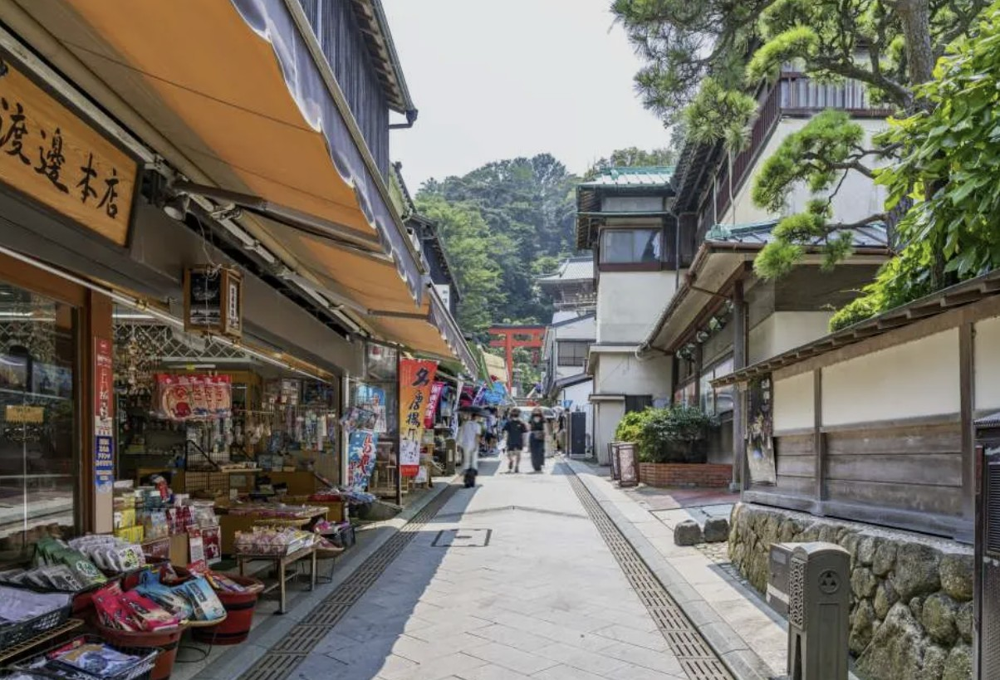
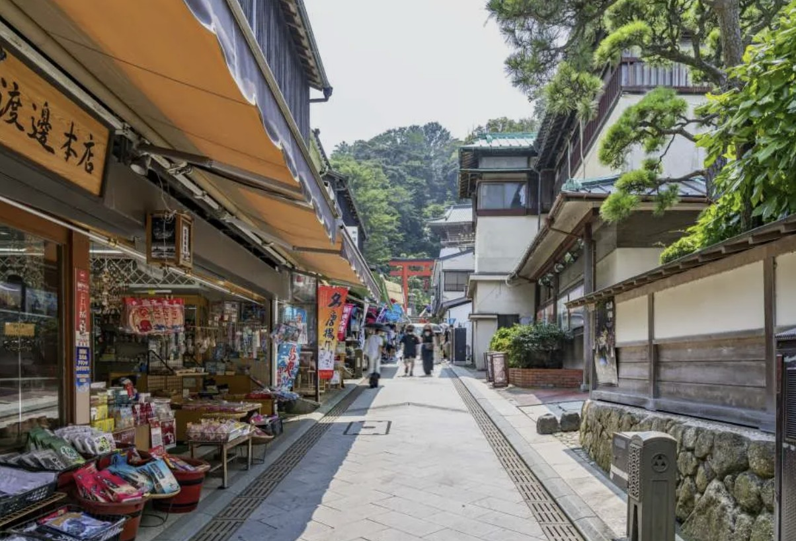

위치 / 접근
가나가와현 후지사와시에 위치한 작은 섬으로, 에노덴(江ノ電) ‘가타세에노시마역’에서 다리를 건너 도보 10분이면 도착한다. 가마쿠라역에서도 에노덴을 타면 약 25분 소요. 섬까지 이어진 긴 보행교 ‘에노시마 대교’가 사진 명소로 유명하다.
운영 / 요금 / 시즌 정보
- 섬 자체는 상시 개방, 입장료 없음
- 에노시마 등대(시캔들 라이트하우스): 입장 500엔 / 9:00~20:00
- 에노시마 동굴(이와야): 입장 500엔 / 9:00~17:00 (계절 변동 있음)
- 연중 야경과 일몰 촬영 명소로 유명하며, 여름에는 해수욕장 개장
무엇을 볼 수 있나 / 체험
섬 안에는 신화 속 용과 여신을 모신 ‘에노시마 신사’를 비롯해 절벽길을 따라 조성된 ‘이와야 동굴’, 그리고 바다 위에 떠 있는 전망대가 있다. 섬 정상의 ‘에노시마 시캔들’에서는 후지산과 석양이 함께 어우러진 풍경을 감상할 수 있다. 밤에는 조명이 켜져 로맨틱한 분위기를 자아내며, 커플 데이트 명소로도 인기다.
먹거리 / 주변 시설
에노시마 입구와 다리 근처에는 시라스(멸치) 덮밥 전문점이 밀집해 있다. 특히 ‘토비이치’, ‘에노시마 코이소’ 등은 현지인 추천 맛집으로 유명하다. 카페와 아이스크림 가게, 바다 전망 레스토랑도 많아 휴식 장소로 좋다. 여름에는 해변 바(BEACH HOUSE)가 열려 음악과 함께 여름 분위기를 즐길 수 있다.
추천 일정 & 여행 스타일
- 오전: 가타세에노시마역 도착 → 신사 참배 → 동굴 탐방
- 오후: 등대 전망대 → 해변 산책 → 일몰 감상
- 여행 스타일: 커플, 가족, 풍경·사진 여행자에게 추천
문화 / 역사 / 배경
에노시마는 일본 신화 속 바다의 여신 ‘벤자이텐’을 모신 성지로 알려져 있다. 예로부터 어부들과 여행자들의 수호신으로 숭배되었으며, 메이지 시대에는 신사와 절이 함께 공존하는 복합 신앙지로 발전했다. 오늘날엔 자연·전망·문화가 어우러진 복합 관광지로, 가마쿠라 일대 여행의 하이라이트로 손꼽힌다.
⚠ 여행 팁
- 등대와 동굴은 계단이 많아 운동화 착용 필수
- 해질녘에는 사진 명소 포인트(대교 위, 등대 앞) 경쟁이 치열함
- 여름엔 더위와 자외선이 강하므로 모자·선크림 준비
- 겨울엔 바닷바람이 차가워 방한 대비 필요
공식·관광 정보
https://enoshima-seacandle.com/ (에노시마 공식 관광 사이트, 일본어·영어 지원)